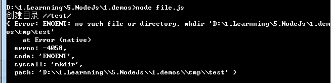

Node.js File System
Node.js's file system module (fsmodule) provides a rich API for reading, writing, deleting files, and performing other file system operations.
The fs module supports both synchronous and asynchronous methods, allowing developers to choose the appropriate approach for file operations based on specific needs.
Import the fs Module
First, you need to import the fs module:
var fs = require("fs")
Asynchronous and Synchronous
Methods in the Node.js file system (fs module) have both asynchronous and synchronous versions. For example, functions for reading file contents include the asynchronous fs.readFile() and the synchronous fs.readFileSync().
For asynchronous methods, the last parameter is a callback function, and the first parameter of the callback function contains the error information (error).
It is recommended to use asynchronous methods. Compared to synchronous methods, asynchronous methods offer better performance, faster speed, and no blocking.
Example
Create an example.txt file with the following content:
菜鸟教程官网地址：www.runoob.com 文件读取实例
Create a file.js file with the following code:
Example
// Asynchronous read
fs.readFile('input.txt', function (err, data) {
if (err) {
return console.error(err);
}
console.log("Asynchronous read: " + data.toString());
});
// Synchronous read
var data = fs.readFileSync('example.txt');
console.log("Synchronous read: " + data.toString());
console.log("Program execution completed.");
The output of the above code is as follows:
$ node file.js 同步读取: 菜鸟教程官网地址：www.runoob.com 文件读取实例 程序执行完毕。 异步读取: 菜鸟教程官网地址：www.runoob.com 文件读取实例
Write File
Asynchronous file write:
fs.writeFile('example.txt', 'Hello, World!', (err) => {
if (err) {
console.error('Error writing file:', err);
return;
}
console.log('File written successfully');
});
Synchronous file write:
try {
fs.writeFileSync('example.txt', 'Hello, World!');
console.log('File written successfully');
} catch (err) {
console.error('Error writing file:', err);
}
Append Content to File
Asynchronous append:
fs.appendFile('example.txt', '\nAppending some text', (err) => {
if (err) {
console.error('Error appending to file:', err);
return;
}
console.log('Text appended successfully');
});
Synchronous append:
try {
fs.appendFileSync('example.txt', '\nAppending some text');
console.log('Text appended successfully');
} catch (err) {
console.error('Error appending to file:', err);
}
Delete File
Asynchronous file deletion:
fs.unlink('example.txt', (err) => {
if (err) {
console.error('Error deleting file:', err);
return;
}
console.log('File deleted successfully');
});
Synchronous file deletion:
try {
fs.unlinkSync('example.txt');
console.log('File deleted successfully');
} catch (err) {
console.error('Error deleting file:', err);
}
Create Directory
Asynchronous directory creation:
fs.mkdir('new_directory', (err) => {
if (err) {
console.error('Error creating directory:', err);
return;
}
console.log('Directory created successfully');
});
Synchronous directory creation:
try {
fs.mkdirSync('new_directory');
console.log('Directory created successfully');
} catch (err) {
console.error('Error creating directory:', err);
}
Read Directory Contents
Asynchronous directory content reading:
fs.readdir('new_directory', (err, files) => {
if (err) {
console.error('Error reading directory:', err);
return;
}
console.log('Directory contents:', files);
});
Synchronous directory content reading:
try {
const files = fs.readdirSync('new_directory');
console.log('Directory contents:', files);
} catch (err) {
console.error('Error reading directory:', err);
}
Check if File or Directory Exists
Asynchronous check:
fs.access('example.txt', fs.constants.F_OK, (err) => {
if (err) {
console.log('File does not exist');
} else {
console.log('File exists');
}
});Synchronous check:
try {
fs.accessSync('example.txt', fs.constants.F_OK);
console.log('File exists');
} catch (err) {
console.log('File does not exist');
}Advanced Usage
1. File Streams
File streams can be used to efficiently read and write large files without loading the entire file into memory at once.
Read file stream:
const fs = require('fs');
const readableStream = fs.createReadStream('large_file.txt', 'utf8');
readableStream.on('data', (chunk) => {
console.log('Received chunk:', chunk);
});
readableStream.on('end', () => {
console.log('No more data.');
});
Write file stream:
const fs = require('fs');
const writableStream = fs.createWriteStream('output.txt');
writableStream.write('Hello, ');
writableStream.write('World!\n');
writableStream.end();
writableStream.on('finish', () => {
console.log('All writes are now complete.');
});2. File System Statistics
You can usefs.stat 或 fs.lstatto get statistics for a file or directory.
Asynchronously get statistics:
fs.stat('example.txt', (err, stats) => {
if (err) {
console.error('Error getting stats:', err);
return;
}
console.log('Is file?', stats.isFile());
console.log('Is directory?', stats.isDirectory());
console.log('Size:', stats.size);
});Synchronously get statistics:
try {
const stats = fs.statSync('example.txt');
console.log('Is file?', stats.isFile());
console.log('Is directory?', stats.isDirectory());
console.log('Size:', stats.size);
} catch (err) {
console.error('Error getting stats:', err);
}
Next, let's take a closer look at the Node.js file system methods.
Open File
Syntax
The following is the syntax for opening a file in asynchronous mode:
fs.open(path, flags[, mode], callback)
Parameters
The parameters are described as follows:
path- path: The path of the file.
flags- flags: The behavior for opening the file. See below for specific values.
mode- mode: Sets the file mode (permissions). The default permission for file creation is 0666 (readable and writable).
callback- callback: The callback function, with two parameters such as: callback(err, fd).
The flags parameter can be the following values:
| Flag | Description |
|---|---|
| r | Open the file in read-only mode. The file must exist. If the file does not exist, an exception is thrown. |
| r+ | Open the file in read-write mode. The file must exist. |
| rs | Open the file synchronously in read-only mode. This is a blocking operation, but may provide better stability on some operating systems. |
| rs+ | Open the file synchronously in read-write mode. This is a blocking operation, but may provide better stability on some operating systems. |
| w | Open the file in write-only mode. If the file does not exist, it is created; if the file exists, it is truncated. |
| wx | Similar to 'w', but fails if the path exists. |
| w+ | Open the file in read-write mode. If the file does not exist, it is created; if the file exists, it is truncated. |
| wx+ | Similar to 'w+', but fails if the path exists. |
| a | Open the file in append mode. If the file does not exist, it is created. |
| ax | Similar to 'a', but fails if the path exists. |
| a+ | Open the file in read and append mode. If the file does not exist, it is created. |
| ax+ | Similar to 'a+', but fails if the path exists. |
Example
Next, we create a file.js file and open input.txt for reading and writing. The code is as follows:
var fs = require("fs");
// 异步打开文件
console.log("准备打开文件！");
fs.open('input.txt', 'r+', function(err, fd) {
if (err) {
return console.error(err);
}
console.log("文件打开成功！");
});
The output of the above code is as follows:
$ node file.js 准备打开文件！ 文件打开成功！
Get File Information
Syntax
The following is the syntax for getting file information in asynchronous mode:
fs.stat(path, callback)
Parameters
The parameters are described as follows:
path- path: The file path.
callback- callback: The callback function, with two parameters such as: (err, stats),statsstats is an fs.Stats object.
After fs.stat(path) is executed, an instance of the Stats class is returned to its callback function. You can use the methods provided by the Stats class to determine file attributes. For example, to check if it is a file:
var fs = require('fs');
fs.stat('/Users/liuht/code/itbilu/demo/fs.js', function (err, stats) {
console.log(stats.isFile()); //true
})
The methods in the Stats class are:
| Method | Description |
|---|---|
| stats.isFile() | Returns true if it is a file, otherwise returns false. |
| stats.isDirectory() | Returns true if it is a directory, otherwise returns false. |
| stats.isBlockDevice() | Returns true if it is a block device, otherwise returns false. |
| stats.isCharacterDevice() | Returns true if it is a character device, otherwise returns false. |
| stats.isSymbolicLink() | Returns true if it is a symbolic link, otherwise returns false. |
| stats.isFIFO() | Returns true if it is a FIFO, otherwise returns false. FIFO is a special type of command pipe in UNIX. |
| stats.isSocket() | Returns true if it is a Socket, otherwise returns false. |
Example
Next, we create a file.js file. The code is as follows:
var fs = require("fs");
console.log("准备打开文件！");
fs.stat('input.txt', function (err, stats) {
if (err) {
return console.error(err);
}
console.log(stats);
console.log("读取文件信息成功！");
// 检测文件类型
console.log("是否为文件(isFile) ? " + stats.isFile());
console.log("是否为目录(isDirectory) ? " + stats.isDirectory());
});
The output of the above code is as follows:
$ node file.js
准备打开文件！
{ dev: 16777220,
mode: 33188,
nlink: 1,
uid: 501,
gid: 20,
rdev: 0,
blksize: 4096,
ino: 40333161,
size: 61,
blocks: 8,
atime: Mon Sep 07 2015 17:43:55 GMT+0800 (CST),
mtime: Mon Sep 07 2015 17:22:35 GMT+0800 (CST),
ctime: Mon Sep 07 2015 17:22:35 GMT+0800 (CST) }
读取文件信息成功！
是否为文件(isFile) ? true
是否为目录(isDirectory) ? false
Write File
Syntax
The following is the syntax for writing to a file in asynchronous mode:
fs.writeFile(file, data[, options], callback)
writeFile directly opens the file with the default flag ofwmode, so if the file exists, the content written by this method will overwrite the old file content.
Parameters
The parameters are described as follows:
file- file: The file name or file descriptor.
data- data: The data to write to the file, which can be a String or a Buffer object.
options- options: This parameter is an object containing {encoding, mode, flag}. The default encoding is utf8, mode is 0666, and flag is 'w'.
callback- callback: The callback function contains only the error parameter (err), which is returned on a write failure.
Example
Next, we create a file.js file. The code is as follows:
var fs = require("fs");
console.log("准备写入文件");
fs.writeFile('input.txt', '我是通 过fs.writeFile 写入文件的内容', function(err) {
if (err) {
return console.error(err);
}
console.log("数据写入成功！");
console.log("--------我是分割线-------------")
console.log("读取写入的数据！");
fs.readFile('input.txt', function (err, data) {
if (err) {
return console.error(err);
}
console.log("异步读取文件数据: " + data.toString());
});
});
The output of the above code is as follows:
$ node file.js 准备写入文件 数据写入成功！ --------我是分割线------------- 读取写入的数据！ 异步读取文件数据: 我是通 过fs.writeFile 写入文件的内容
Read File
Syntax
The following is the syntax for reading files in asynchronous mode:
fs.read(fd, buffer, offset, length, position, callback)
This method uses a file descriptor to read the file.
Parameters
The parameter usage instructions are as follows:
fd- The file descriptor returned by the fs.open() method.
buffer- The buffer where the data will be written.
offset- The write offset in the buffer.
length- The number of bytes to read from the file.
position- The starting position for reading the file. If the value of position is null, reading will start from the current file pointer position.
callback- Callback function, with three parameters err, bytesRead, buffer. err is the error message, bytesRead indicates the number of bytes read, and buffer is the buffer object.
Example
The content of the input.txt file is:
菜鸟教程官网地址：www.runoob.com
Next, we create the file.js file, with the code as follows:
var fs = require("fs");
var buf = new Buffer.alloc(1024);
console.log("准备打开已存在的文件！");
fs.open('input.txt', 'r+', function(err, fd) {
if (err) {
return console.error(err);
}
console.log("文件打开成功！");
console.log("准备读取文件：");
fs.read(fd, buf, 0, buf.length, 0, function(err, bytes){
if (err){
console.log(err);
}
console.log(bytes + " 字节被读取");
// 仅输出读取的字节
if(bytes > 0){
console.log(buf.slice(0, bytes).toString());
}
});
});
The execution result of the above code is as follows:
$ node file.js 准备打开已存在的文件！ 文件打开成功！ 准备读取文件： 42 字节被读取 菜鸟教程官网地址：www.runoob.com
Close File
Syntax
The following is the syntax for closing a file in asynchronous mode:
fs.close(fd, callback)
This method uses a file descriptor to read the file.
Parameters
The parameter usage instructions are as follows:
fd- The file descriptor returned by the fs.open() method.
callback- Callback function, with no parameters.
Example
The content of the input.txt file is:
菜鸟教程官网地址：www.runoob.com
Next, we create the file.js file, with the code as follows:
var fs = require("fs");
var buf = new Buffer.alloc(1024);
console.log("准备打开文件！");
fs.open('input.txt', 'r+', function(err, fd) {
if (err) {
return console.error(err);
}
console.log("文件打开成功！");
console.log("准备读取文件！");
fs.read(fd, buf, 0, buf.length, 0, function(err, bytes){
if (err){
console.log(err);
}
// 仅输出读取的字节
if(bytes > 0){
console.log(buf.slice(0, bytes).toString());
}
// 关闭文件
fs.close(fd, function(err){
if (err){
console.log(err);
}
console.log("文件关闭成功");
});
});
});
The execution result of the above code is as follows:
$ node file.js 准备打开文件！ 文件打开成功！ 准备读取文件！ 菜鸟教程官网地址：www.runoob.com 文件关闭成功
Truncate File
Syntax
The following is the syntax for truncating a file in asynchronous mode:
fs.ftruncate(fd, len, callback)
This method uses a file descriptor to read the file.
Parameters
The parameter usage instructions are as follows:
fd- The file descriptor returned by the fs.open() method.
len- The length to which the file content is truncated.
callback- Callback function, with no parameters.
Example
The content of the input.txt file is:
site:www.runoob.com
Next, we create the file.js file, with the code as follows:
var fs = require("fs");
var buf = new Buffer.alloc(1024);
console.log("准备打开文件！");
fs.open('input.txt', 'r+', function(err, fd) {
if (err) {
return console.error(err);
}
console.log("文件打开成功！");
console.log("截取10字节内的文件内容，超出部分将被去除。");
// 截取文件
fs.ftruncate(fd, 10, function(err){
if (err){
console.log(err);
}
console.log("文件截取成功。");
console.log("读取相同的文件");
fs.read(fd, buf, 0, buf.length, 0, function(err, bytes){
if (err){
console.log(err);
}
// 仅输出读取的字节
if(bytes > 0){
console.log(buf.slice(0, bytes).toString());
}
// 关闭文件
fs.close(fd, function(err){
if (err){
console.log(err);
}
console.log("文件关闭成功！");
});
});
});
});
The execution result of the above code is as follows:
$ node file.js 准备打开文件！ 文件打开成功！ 截取10字节内的文件内容，超出部分将被去除。 文件截取成功。 读取相同的文件 site:www.r 文件关闭成功
Delete File
Syntax
The following is the syntax for deleting a file:
fs.unlink(path, callback)
Parameters
The parameter usage instructions are as follows:
path- File path.
callback- Callback function, with no parameters.
Example
The content of the input.txt file is:
site:www.runoob.com
Next, we create the file.js file, with the code as follows:
var fs = require("fs");
console.log("准备删除文件！");
fs.unlink('input.txt', function(err) {
if (err) {
return console.error(err);
}
console.log("文件删除成功！");
});
The execution result of the above code is as follows:
$ node file.js 准备删除文件！ 文件删除成功！
Then check the input.txt file again and find that it no longer exists.
Create Directory
Syntax
The following is the syntax for creating a directory:
fs.mkdir(path[, options], callback)
Parameters
The parameter usage instructions are as follows:
path- File path.
-
The options parameter can be:
- recursive - Whether to create the directory recursively, defaulting to false.
- mode- Set the directory permissions, defaulting to 0777.
callback- Callback function, with no parameters.
Example
Next, we create the file.js file, with the code as follows:
var fs = require("fs");
// tmp 目录必须存在
console.log("创建目录 /tmp/test/");
fs.mkdir("/tmp/test/",function(err){
if (err) {
return console.error(err);
}
console.log("目录创建成功。");
});
The execution result of the above code is as follows:
$ node file.js 创建目录 /tmp/test/ 目录创建成功。
You can add the recursive: true parameter, regardless of whether the directories /tmp and /tmp/a to be created already exist:
fs.mkdir('/tmp/a/apple', { recursive: true }, (err) => {
if (err) throw err;
});
Read Directory
Syntax
The following is the syntax for reading a directory:
fs.readdir(path, callback)
Parameters
The parameter usage instructions are as follows:
path- File path.
callback- Callback function, which has two parameters err, files. err is the error message, and files is an array list of files in the directory.
Example
Next, we create the file.js file, with the code as follows:
var fs = require("fs");
console.log("查看 /tmp 目录");
fs.readdir("/tmp/",function(err, files){
if (err) {
return console.error(err);
}
files.forEach( function (file){
console.log( file );
});
});
The execution result of the above code is as follows:
$ node file.js 查看 /tmp 目录 input.out output.out test test.txt
Delete Directory
Syntax
The following is the syntax for deleting a directory:
fs.rmdir(path, callback)
Parameters
The parameter usage instructions are as follows:
path- File path.
callback- Callback function, with no parameters.
Example
Next, we create the file.js file, with the code as follows:
var fs = require("fs");
// 执行前创建一个空的 /tmp/test 目录
console.log("准备删除目录 /tmp/test");
fs.rmdir("/tmp/test",function(err){
if (err) {
return console.error(err);
}
console.log("读取 /tmp 目录");
fs.readdir("/tmp/",function(err, files){
if (err) {
return console.error(err);
}
files.forEach( function (file){
console.log( file );
});
});
});
The execution result of the above code is as follows:
$ node file.js 准备删除目录 /tmp/test 读取 /tmp 目录 ……
File Module Methods Reference Manual
The following is a list of methods for the Node.js file module:
| Serial Number | Method & Description |
|---|---|
| 1 | fs.rename(oldPath, newPath, callback) Asynchronous rename(). Callback function has no parameters, but may throw an exception. |
| 2 | fs.ftruncate(fd, len, callback) Asynchronous ftruncate(). Callback function has no parameters, but may throw an exception. |
| 3 | fs.ftruncateSync(fd, len) Synchronous ftruncate() |
| 4 | fs.truncate(path, len, callback) Asynchronous truncate(). Callback function has no parameters, but may throw an exception. |
| 5 | fs.truncateSync(path, len) Synchronous truncate() |
| 6 | fs.chown(path, uid, gid, callback) Asynchronous chown(). Callback function has no parameters, but may throw an exception. |
| 7 | fs.chownSync(path, uid, gid) Synchronous chown() |
| 8 | fs.fchown(fd, uid, gid, callback) Asynchronous fchown(). Callback function has no parameters, but may throw an exception. |
| 9 | fs.fchownSync(fd, uid, gid) Synchronous fchown() |
| 10 | fs.lchown(path, uid, gid, callback) Asynchronous lchown(). Callback function has no parameters, but may throw an exception. |
| 11 | fs.lchownSync(path, uid, gid) Synchronous lchown() |
| 12 | fs.chmod(path, mode, callback) Asynchronous chmod(). Callback function has no parameters, but may throw an exception. |
| 13 | fs.chmodSync(path, mode) Synchronous chmod(). |
| 14 | fs.fchmod(fd, mode, callback) Asynchronous fchmod(). Callback function has no parameters, but may throw an exception. |
| 15 | fs.fchmodSync(fd, mode) Synchronous fchmod(). |
| 16 | fs.lchmod(path, mode, callback) Asynchronous lchmod(). Callback function has no parameters, but may throw an exception. Only available on Mac OS X. |
| 17 | fs.lchmodSync(path, mode) Synchronous lchmod(). |
| 18 | fs.stat(path, callback) Asynchronous stat(). Callback function has two parameters err, stats. stats is an fs.Stats object. |
| 19 | fs.lstat(path, callback) Asynchronous lstat(). Callback function has two parameters err, stats. stats is an fs.Stats object. |
| 20 | fs.fstat(fd, callback) Asynchronous fstat(). Callback function has two parameters err, stats. stats is an fs.Stats object. |
| 21 | fs.statSync(path) Synchronous stat(). Returns an instance of fs.Stats. |
| 22 | fs.lstatSync(path) Synchronous lstat(). Returns an instance of fs.Stats. |
| 23 | fs.fstatSync(fd) Synchronous fstat(). Returns an instance of fs.Stats. |
| 24 | fs.link(srcpath, dstpath, callback) Asynchronous link(). Callback function has no parameters, but may throw an exception. |
| 25 | fs.linkSync(srcpath, dstpath) Synchronous link(). |
| 26 | fs.symlink(srcpath, dstpath[, type], callback) Asynchronous symlink(). Callback function has no parameters, but may throw an exception. The type parameter can be set to 'dir', 'file', or 'junction' (defaults to 'file'). |
| 27 | fs.symlinkSync(srcpath, dstpath[, type]) Synchronous symlink(). |
| 28 | fs.readlink(path, callback) Asynchronous readlink(). Callback function has two parameters err, linkString. |
| 29 | fs.realpath(path[, cache], callback) Asynchronous realpath(). Callback function has two parameters err, resolvedPath. |
| 30 | fs.realpathSync(path[, cache]) Synchronous realpath(). Returns the absolute path. |
| 31 | fs.unlink(path, callback) Asynchronous unlink(). Callback function has no parameters, but may throw an exception. |
| 32 | fs.unlinkSync(path) Synchronous unlink(). |
| 33 | fs.rmdir(path, callback) Asynchronous rmdir(). Callback function has no parameters, but may throw an exception. |
| 34 | fs.rmdirSync(path) Synchronous rmdir(). |
| 35 | fs.mkdir(path[, mode], callback) Asynchronous mkdir(2). Callback function has no parameters, but may throw an exception. The access permission defaults to 0777. |
| 36 | fs.mkdirSync(path[, mode]) Synchronous mkdir(). |
| 37 | fs.readdir(path, callback) Asynchronous readdir(3). Reads the contents of a directory. |
| 38 | fs.readdirSync(path) Synchronous readdir(). Returns an array list of files. |
| 39 | fs.close(fd, callback) Asynchronous close(). Callback function has no parameters, but may throw an exception. |
| 40 | fs.closeSync(fd) Synchronous close(). |
| 41 | fs.open(path, flags[, mode], callback) Asynchronously opens a file. |
| 42 | fs.openSync(path, flags[, mode]) Synchronous version of fs.open(). |
| 43 | fs.utimes(path, atime, mtime, callback) |
| 44 | fs.utimesSync(path, atime, mtime) Modify the file timestamps, with the file specified by the given file path. |
| 45 | fs.futimes(fd, atime, mtime, callback) |
| 46 | fs.futimesSync(fd, atime, mtime) Modify the file timestamps, specified by the file descriptor. |
| 47 | fs.fsync(fd, callback) Asynchronous fsync. Callback function has no parameters, but may throw an exception. |
| 48 | fs.fsyncSync(fd) Synchronous fsync. |
| 49 | fs.write(fd, buffer, offset, length[, position], callback) Write the buffer content to the file specified by the file descriptor. |
| 50 | fs.write(fd, data[, position[, encoding]], callback) Write file content via the file descriptor fd. |
| 51 | fs.writeSync(fd, buffer, offset, length[, position]) Synchronous version of fs.write(). |
| 52 | fs.writeSync(fd, data[, position[, encoding]]) Synchronous version of fs.write(). |
| 53 | fs.read(fd, buffer, offset, length, position, callback) Read file content via the file descriptor fd. |
| 54 | fs.readSync(fd, buffer, offset, length, position) Synchronous version of fs.read. |
| 55 | fs.readFile(filename[, options], callback) Asynchronously read file contents. |
| 56 | fs.readFileSync(filename[, options]) |
| 57 | fs.writeFile(filename, data[, options], callback) Asynchronously write file contents. |
| 58 | fs.writeFileSync(filename, data[, options]) Synchronous version of fs.writeFile. |
| 59 | fs.appendFile(filename, data[, options], callback) Asynchronously append to file contents. |
| 60 | fs.appendFileSync(filename, data[, options]) The synchronous version of fs.appendFile. |
| 61 | fs.watchFile(filename[, options], listener) Watch for file modifications. |
| 62 | fs.unwatchFile(filename[, listener]) Stop watching filename for modifications. |
| 63 | fs.watch(filename[, options][, listener]) Watch for modifications to filename, which can be a file or directory. Returns an fs.FSWatcher object. |
| 64 | fs.exists(path, callback) Check whether the given path exists. |
| 65 | fs.existsSync(path) Synchronous version of fs.exists. |
| 66 | fs.access(path[, mode], callback) Test user permissions for the specified path. |
| 67 | fs.accessSync(path[, mode]) Synchronous version of fs.access. |
| 68 | fs.createReadStream(path[, options]) Returns a ReadStream object. |
| 69 | fs.createWriteStream(path[, options]) Returns a WriteStream object. |
| 70 | fs.symlink(srcpath, dstpath[, type], callback) Asynchronous symlink(). The callback function has no parameters, but may throw an exception. |
For more information, please see the official website's file module description:File System。
Other extensions
duanzhuang2010
dua***uang2010@hotmail.com
fs.writeFileIt does not necessarily overwrite the original file content; it depends on the flags passed when opening the fileflags. If it is opened viawriteFiledirectly opening the file, the default iswmode, but you can alsoopenopen the file with a specified mode, and then usewriteFileto write to the file, for example:
fs.open(fileName, "a+", function(err, fd){ if (err) { return console.error(err); } fs.writeFile(fd, "bb", function(err){ if (err){ return console.error(err); } }); });The abovewriteFilewrites to the file in append mode.
duanzhuang2010
dua***uang2010@hotmail.com
luomj
luo***njun@qq.com
Reference URL
A small pitfall with the mkdir method when creating directories:
For example, to create the directory /tmp/test/ under the current directory, the process is as follows:
At first, I wrote it like this:
console.log("创建目录 //test/"); fs.mkdir("./tmp/test/",function(err){ if (err) { return console.error(err); } console.log("目录创建成功。"); });Then running it threw an exception (no such file or directory, mkdir...) as follows:

Later I found that directories need to be created layer by layer. The modified code is as follows:
console.log("创建目录 /tmp/test/"); //异步 fs.mkdir("./tmp/",function(err){ if (err) { return console.error(err); } console.log("tmp目录创建成功。"); fs.mkdir("./tmp/test/",function(err){ if (err) { return console.error(err); } console.log("test目录创建成功。"); }); }); console.log("创建目录 /tmp1/test/"); //同步 fs.mkdirSync("./tmp1/"); fs.mkdirSync("./tmp1/test/");luomj
luo***njun@qq.com
Reference URL
HelloWor1d
119***3802@qq.com
Replying to the previous post. Directories do not need to be created layer by layer; the tutorial above actually mentioned this.
You can add therecursive: trueparameter, regardless of whether the directory to be createdtmpexists or not:
var fs = require("fs"); fs.mkdir('tmp/test', { recursive: true }, (err) => { if (err) throw err; console.log("Finish."); });HelloWor1d
119***3802@qq.com
wtf
806***163@qq.com
Note the version issue with recursive; it can only be used after node 10.14.1.
Solution for older versions:
var fs = require("fs"); var path = require("path"); function mkdirs(dirname, callback) { fs.exists(dirname, function (exists) { if (exists) { callback(); } else { //console.log(path.dirname(dirname)); mkdirs(path.dirname(dirname), function () { fs.mkdir(dirname, callback); }); } }); } mkdirs('./hello/world/teset', function (err) { if (err) throw err; });wtf
806***163@qq.com
ChunKai
213***1688@qq.com
Delete a non-empty directory:
let fs = require('fs'); let rimraf = require('rimraf'); fs.exists('test/test1/test2', exists => { if (exists) { rimraf('test', err => { if (err) return console.error(err); console.log('删除目录成功!'); }); } else { fs.mkdir('test/test1/test2', {'recursive': true}, err => { if (err) return console.error(err); console.log('创建成功！'); }); } })ChunKai
213***1688@qq.com